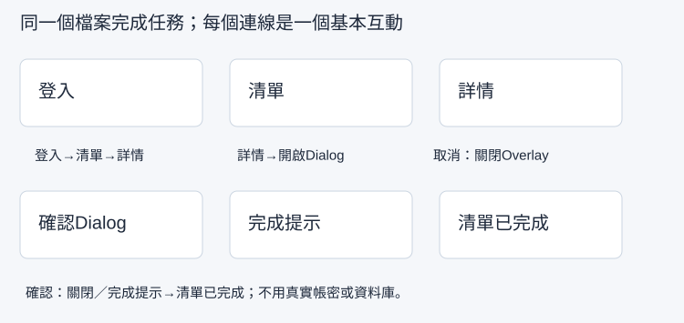

把需求畫成線框，再組成可測試的流程
需求是：「行政人員登入後，找到待處理任務，檢視內容並標記完成。」你會先用線框檢查資訊位置，再放入前八堂的實際元件，建立固定原型入口。線框先決定內容與順序，原型再加上操作行為。
開始前，先找到材料與起點
從第08堂檔案找出Login、List、Detail、List Done和Confirm。任意說出一個畫面的進出條件即可開始。缺畫面先依本堂對照回前課重建，不用空白佔位畫面直接接線。
先開啟本堂起始材料（HTML），讀取輸入與圖層名稱；操作在你的 Figma 檔或本堂指定工具完成。完成後到本堂完成檢查表（可儲存／下載）記錄實際結果。
先寫任務，讓每張畫面都有理由
任務卡不用寫得像規格檔案，四句話即可：「誰在用、從哪裡開始、要完成什麼、有哪些限制」。本例是：行政人員／Login起點／完成T01任務／手機402，使用示範帳號，不接資料庫。
| 畫面名稱 | 要看到什麼 | 怎麼進入 | 怎麼離開 |
|---|---|---|---|
Screen / Login | 帳號、密碼、登入Button | 原型起始點 | 登入到List |
Screen / List | 三筆任務、Navigation | Login | T01到Detail |
Screen / Detail | T01內容、期限、完成Button | List的T01 | 返回List或開Confirm |
Overlay / Confirm | 結果說明、取消／確認 | Detail的Complete | 取消關閉；確認到List Done |
Screen / List Done | T01已完成、成功Toast | Confirm | 返回待處理或檢視其他專案 |
Screen / Login Error與Screen / List Empty是額外狀態，不代表所有狀態都需要放進主線。長列表是第13堂增加的滾動版本。把主線與測試分支分清楚，方便找出失敗的那一步。
示範：做低細節線框，不先追求漂亮
- 在同一份Figma檔的空白區新建
Wireframe / Login與Wireframe / List，皆402×874。可以先複製空白手機Frame，但不要把整個精緻表單當線框，否則看不出資訊決策。 - Login只放灰色區塊、固定標籤「帳號」「密碼」與「登入」動作；每個欄位高度48，左右24。List只放「待處理清單」、三列任務區與底部Navigation。
- 把任務卡放在兩張線框旁，畫箭頭表示Login→List。自己依任務卡走讀：從Login的帳號／密碼欄找到「登入」，沿箭頭到List，再找第一筆T01標題與詳情動作。記錄「起點→動作標籤→下一張畫面→T01位置」，缺一步就補標籤或調整位置。有同學時可先請他只看線框做同樣走讀，保留他的實際路徑，不口頭補充。
- 修正沒有動詞的按鈕、看不出順序的列表，或過多同樣突出的標題。線框用於找到這些問題，不用先調整陰影或品牌色。
中間結果：本人走讀紀錄能逐一對到線框上的登入欄位、登入動作與T01位置，缺漏已修正，這時才進到精緻介面。有同學的閱讀結果另記；沒有同學時標「他人反饋待補」，本人核對不能證明新使用者已理解。線框上的箭頭只是設計說明，還不是Prototype連線。
跟著做：把前課元件對回主線畫面
- 回正式
Screen / Login，確認使用Field / Account、Field / Password、Button / Login；找不到時回第06堂末段重建。主線按鈕名稱統一用Button / Login，不另造Button / Primary或只有「登入」文字的熱區。 - 回
Screen / List，確認List / Content內有Row / T01、T02、T03與Nav / Bottom；Detail包含Button / Complete。Overlay / Confirm在外部畫布，不能直接放進Detail當靜態背景。 - 按上表逐一寫進畫面清單。每列畫面名稱都要在Layers找得到；若名稱不同，現在統一，下一堂不靠猜Destination。
- 選最外層Screen / Login，切右側Prototype，新增Flow starting point／流程起始點，命名
TASK-01 Complete a task。如果入口在頂端播放圖示旁，確認所選仍是Login，不是它的Button子層。 - 使用Present／播放預覽。此時只驗收首畫面是Login且尺寸正確；沒有連線時按登入不切頁是正常，下一堂才設定。
- 在任務卡記錄起點、目標與畫面名字，儲存線框、正式畫面與Preview首畫面。別用另一個獨立Figma檔切斷前課材料。

從工具看見錯誤時
- Preview從List開始：在Prototype檢查起始點是不是設到List，移回Login或在預覽選TASK-01。
- 看得到箭頭卻不能點：線框手畫箭頭只表達概念，Prototype需要真正連線。
- Frame名字相同難找：將Login／List／Detail／List Done命名唯一，保留功能詞，不只叫Frame 1。
- 正式畫面與線框內容不同：回任務卡判斷是否合理改動，補理由；不因為線框先畫就永遠不能調整。
- 想找共享Starter檔：本課主線在自己的課程檔完成，起始材料是文字／SVG與重建方法，不需要虛構外部檔案。
下一堂會接Login→List→Detail→返回的基本互動；Confirm與完成結果第12堂加入。
自己完成：改變條件再檢查
將使用者換成「第一次使用的工讀生」，目標改為找到T02的期限。做一張Detail線框，並在現有T01詳情旁建立 Screen / Detail T02：標題、期限、說明都改為T02。自己從Login線框沿任務路徑定位T02，再在Detail線框找到期限，將找到的位置與第07堂資料表核對。記錄走讀路徑與核對結果；若發現缺標籤、走錯筆或期限不符，保留修改前後，沒有發現問題就照實記「未發現缺漏」。有同學時另外記錄他只看線框的實際路徑與誤解。最後確認原TASK-01入口沒有被這個測試分支覆蓋。
完成條件與理解檢查
- 任務卡與五個主線畫面名稱對得上，畫面內容使用前課元件。
- 線框呈現資訊與動作位置，並留下本人走讀紀錄；他人閱讀反饋另記實際結果或待補。
- TASK-01起點在Login，Preview首畫面正確；T02分支有自己的內容。
想一想：線框上的箭頭和Prototype連線有何不同？
展開參考答案與理由
線框箭頭說明預期順序，不能執行點選；Prototype連線要繫結實際物件、觸發與目的地，才會在預覽改變畫面。
本堂查證來源
來源查證：2026-10-09。